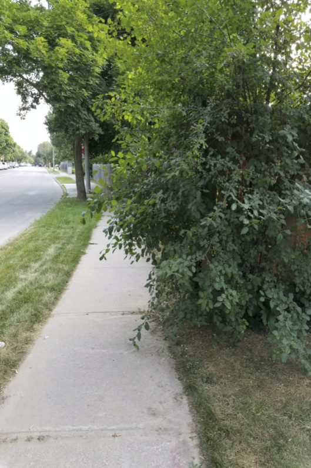
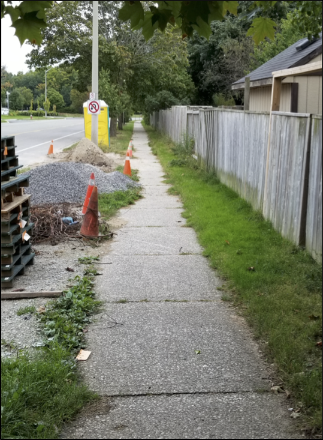
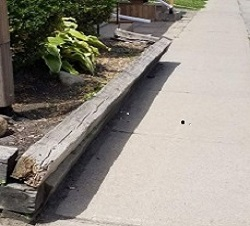

Using LiDAR to Map Sidewalk Encroachment
Sidewalk encroachments (e.g. overgrown bushes, overhanging trees, leaning fences built etc.) can have a profound impact on health, social integration, independence and equal opportunities for persons with accessibility issues and vision impairment (see images). Many municipalities perform annual audits of sidewalk accessibility using manual inspection. In this part of the lab, we're going to use the LiDAR data set to identify places of likely accessibility violations, which could be used to inform targeted auditing.
|  |  |  |
A LiDAR point corresponds to an encroachment if it lies within the sidewalk corridor and is less than 1.88 m off the ground. In order to map this sub-set of points, we must first consider the fact that the z-values associated with points are elevations above sea level (ASL), rather than height above ground (HAG). We can convert the z-values to HAG using the LidarTophatTransform tool. Input the 1km174790476002017_colourized.las point cloud from Part 1 and call the output 1km174790476002017_HAG.las. Set the search radius to 2.0 m. In reality, this tool will measure the vertical difference in elevation between each point and the lowest point within a 2 m search window. Since for most locations in our study area, a 2 m radius search window is likely to include at least one point on the ground, the resulting measure can be considered HAG. The one exception to this are rooftop points that are more than 2 m away from the edge of the building. These points will be given a HAG of 0.0, despite being quite high off the ground. Fortunately for our purposes these points are also situated nowhere near a sidewalk.
2.1. What is a top-hat transform? What is the difference between a white and black top-hat transform. Which of the two do you think is being used by the LidarTophatTransform tool to convert LiDAR data to HAG? (4 marks)
This process of creating a digital height model is sometimes called normalizing the point cloud and is a very common procedure in forestry applications of LiDAR where tree heights are more important than elevation.
Now, we are only interested in the subset of points that are above the ground (> 0.0 m) and less than 1.88 m of the ground. Given that we can expect that there will be some error associated with the measurement values, we should probably exclude points if they are within some error tolerance of the ground (e.g. 0.2 m). Use the LidarElevationSlice to remove all points that lie outside of the elevation range of 0.2 - 1.88 m. Call the output LAS file 1km174790476002017_near_grd.las.
We would like to remove all of the LiDAR points that fall outside of the sidewalk corridor. You will notice that the data for this lab assignment includes a Shapefile named sidewalk_polygons.shp. Feel free to overlay this vector onto the SWOOP air photo and OpenStreetMap data in QGIS to gain context of the data layer. Now use the ClipLidarToPolygon tool to clip, or remove, all of the points that lie outside of these sidewalk polygons. This should leave the subset of points that we are considering to belong to sidewalk encroachments. Call the output file whatever you like.
2.2. How many points are associated with sidewalk encroachments in the area (hint, use the LidarInfo tool). (1 mark)
Lastly, use the LasToShapefile tool to convert the LAS file of sidewalk encroachment points (from previous steps) to a vector Shapefile, which you can then overlay onto your air photo in QGIS. (You should probably remove the sidewalk polygons at this point.)
2.3. Include your map of encroachment points overlaid on top of the SWOOP photo with your lab report. (2 marks)
2.4. After inspecting the points, what do you think is the most common cause of sidewalk encroachments in the study site? Be sure to justify your answer with evidence (e.g. exemplar screenshots) (3 marks)
2.5. What are some of the limitations of this approach to mapping sidewalk encroachments? (3 marks)